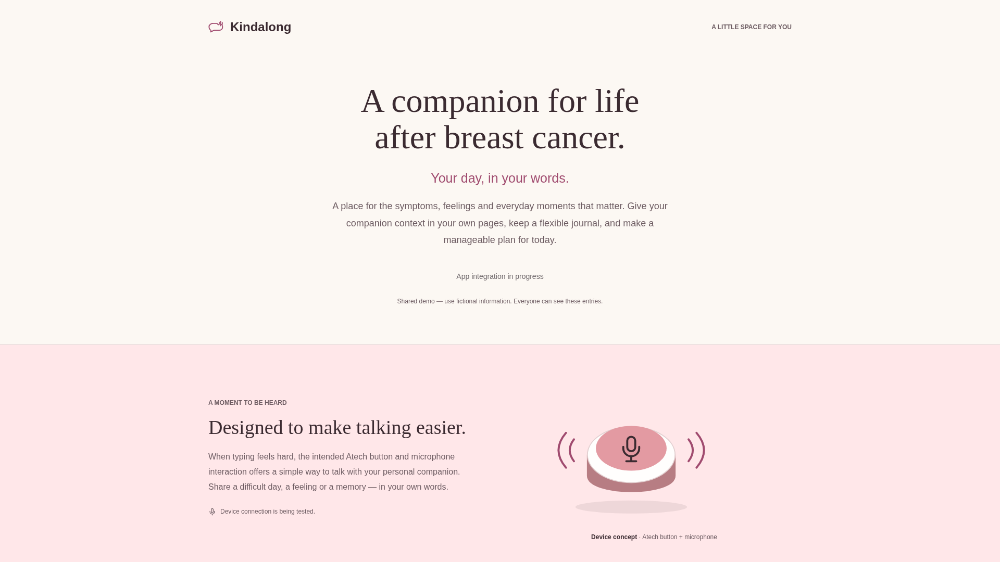
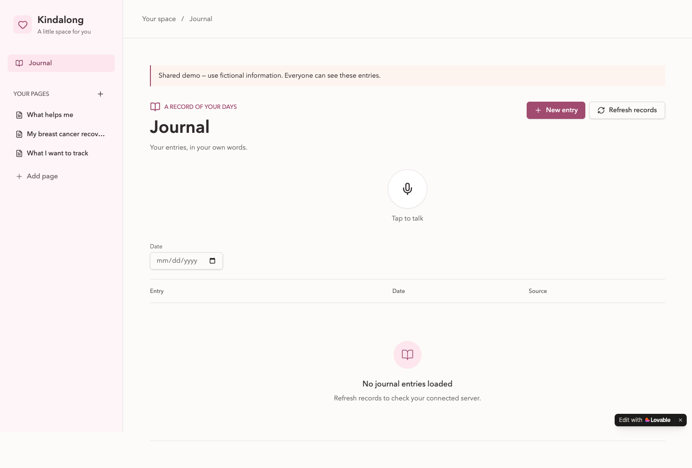

Breast cancer treatment can end before its effects do.
A companion for physical symptoms, feelings and everyday life between appointments.
Jonas · Klara · Chloé

Emma's recovery between appointments
Joint pain, fatigue and worry affect the same day.
She wants to remember difficult days before her next oncology appointment, and keep today's plans manageable.
Meet Emma
A fictional composite from our research
Active hospital treatment has ended. She is eighteen months into prescribed hormone therapy.
"I'd like enough energy to call my sister at three."
Synthetic scenario dialogue. This is not patient testimony.
A journal shaped by Emma's context
Designed to turn her spoken account into an editable Journal entry and a small day plan.
- Her breast cancer recoveryThe context she wants the companion to know
- What she wants to trackSymptoms, feelings and what matters today
- What helps herHer own coping preferences and priorities

Emma's context, live today
"Today it's six out of ten, my hand pain is seven, and I slept five hours. I'm worried about my next oncology appointment."
She reports her prescribed medication and asks for a manageable plan, with time to call her sister.
Open the public app ↗- Show her contextThree saved breast-cancer demo pages
- Show her JournalThe shared demo Journal in the public app
- Spoken save: pendingThe first real spoken save is still being validated
From her words, one editable entry with symptoms, worry and her medication self-report, and a plan based on her preferences.
Current evidence and remaining tests
Recorded technical evidence
- Public app access and three saved context pages verified.
- Backend owner reports 64 passing tests and deployed replay, Stop and CORS checks.
Technical checks establish readiness for a spoken test.
Still to demonstrate
- Genuine speech to saved entry, context use and reload.
- Physical Atech speech to Journal.
- Whether the workflow helps women in everyday life.
Shared synthetic demo. No patient trial or clinical outcome evidence.
Her words.
Her recovery.
Her day.
Next, we propose testing this daily journaling workflow with women living with the effects of breast cancer treatment.
Can they capture a difficult day and revisit it before a follow-up?
Personal accounts and privacy are part of the next build.
Kindalong · Jonas, Klara and Chloé